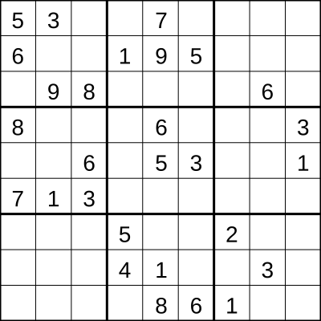
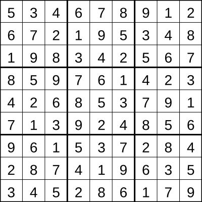

Quick Intro to P vs NP
In this post, I will give an ultra brief introduction to the P vs NP problem. Consider these two related sudoku problems:
Problem A: Given a partially filled \(n^2 \times n^2 \) sudoku, determine whether there's a valid solution.

Problem B: Given a completely filled out \(n^2 \times n^2\) sudoku, determine whether it's a valid solution.

In the above examples, we have \(n = 3 \).
Problem A is an example of an NP-complete problem.
Other examples include the knapsack problem and the travelling salesman problem.
Informal definition of NP-Complete problems.
- We think these problems are hard to solve (we think the best algorithm is to check all possible solutions).
- Given a solution, its "easy to verify" (see Problem B).
For 2, note Problem B has an efficient algorithm:
- Check all rows. There are \( n^2 \) rows each of length \( n^2 \). This takes time \( O(n^4) \).
- Check all columns. This similarly takes \( O(n^4 ) \) time.
- Check all boxes. This also takes \( O(n^4) \) time.
Total time of this algorithm is \( O(n^4) \), which is considered efficient (polynomial time). Thus, Problem B is a P problem.
Other examples of P problems include shortest path between two points, sorting an array, and finding the maximum in an array.
P vs NP problem:
Are these two classes of problems the same?
- Intuitively: Answer is no - finding a solution should be harder than verifying a solution.
- Reality: We don't know - no progress for 70 years.
Why do we care?
NP contains many important problems. We want to know if we can solve them efficiently (\(\$\$\$\)). And at this point, we want to understand why P vs NP is so difficult.
Current Research:
What do you when you're stuck? Simplify. Researchers now consider much simpler versions of P vs NP. Still stuck...